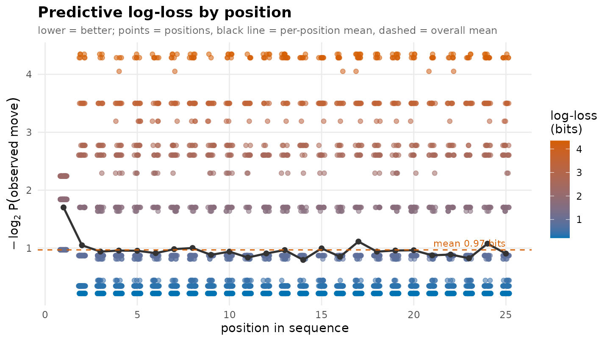
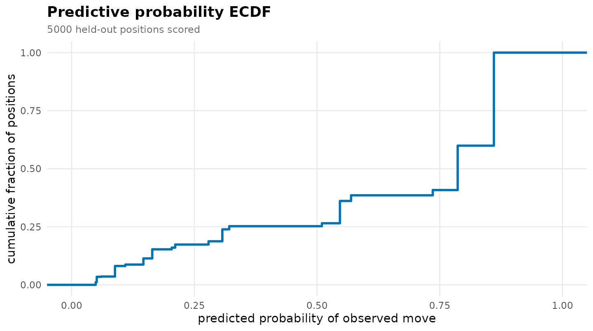
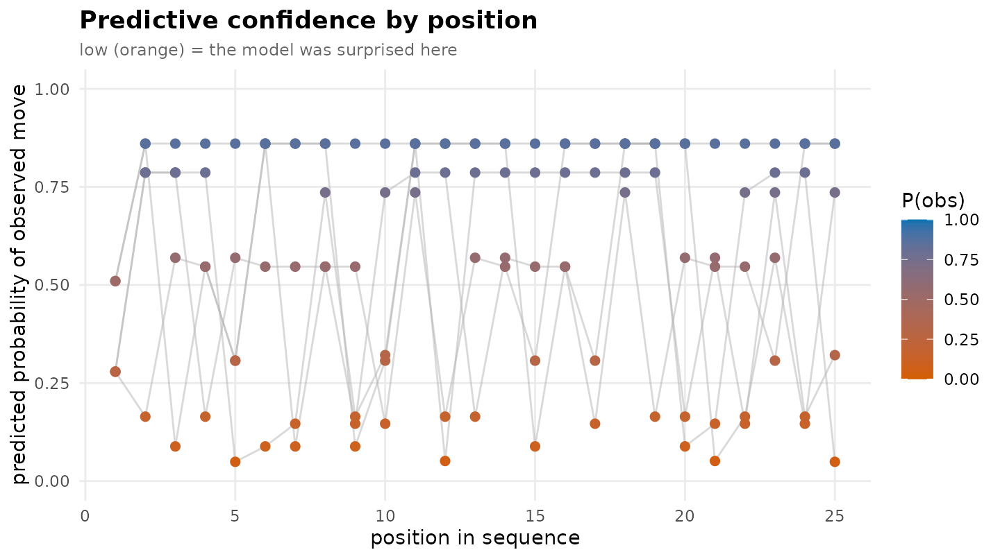

Prediction, scoring, imputation and mining
Written by Mohammed Saqr and Sonsoles López-Pernas
Source:vignettes/articles/prediction-and-scoring.Rmd
prediction-and-scoring.RmdA variable-order transition tree is a probabilistic model of the next state given the states that preceded it. For every history it selects the longest suffix that the tree holds as a context and returns that context’s next-state distribution (Ron, Singer and Tishby, 1996; Bühlmann and Wyner, 1999). The same distribution serves several purposes. It predicts what comes next. It assigns a likelihood to an observed sequence, so sequences and single transitions can be ranked by how expected or surprising they are, and so a model can be judged by the probability it gives to sequences it has not seen. It generates new sequences, and it fills gaps in incomplete ones.
This guide covers these uses: predict() and
query_pathway() for the next state,
perplexity() and model_fit() for held-out fit,
score_sequences(), score_positions() and
plot_predictive() for scoring,
mine_sequences() and mine_contexts() for
finding unusual sequences and contexts,
generate_sequences() and simulate() for
generation, and impute_sequences() for gaps.
Data
engagement holds the engagement states of 1,000 students
over 25 time steps.
- Sequence: one row per student.
-
Time: columns
T1toT25;NAmarks positions after a student dropped out. -
State:
Active,AverageorDisengaged.
The first 800 students are used to fit the tree and the last 200 are
held out to evaluate it. head() and tail()
split the rows.
library(transitiontrees)
dim(engagement)
#> [1] 1000 25
training <- head(engagement, 800)
held_out <- tail(engagement, 200)The model
To fit the tree, we call context_tree() with
max_depth for the longest history and
min_count for the smallest number of observations a context
needs; prune_tree() then removes contexts whose prediction
does not differ from their parent’s by the
test.
grown <- context_tree(training, max_depth = 3L, min_count = 10L)
tree <- prune_tree(grown)
tree
#> <transitiontrees> 6 nodes, depth <= 3, 3 states [pruned]
#> alphabet : Active, Average, Disengaged
#> fit on : 800 sequences, 19555 observations
#> smoothing: floor(ymin=0.001, rule=interpolate) min_count = 10
#> pruned by: G2 alpha = 0.05
#> (start) n=19555 -> Active (0.51)
#> |-- Active n=9548 -> Active (0.86)
#> |-- Average n=3973 -> Average (0.55)
#> | `-- Disengaged n=822 -> Average (0.57)
#> `-- Disengaged n=5234 -> Disengaged (0.79)
#> `-- Average n=564 -> Disengaged (0.74)Of the 40 contexts grown, pruning keeps 6. One step of history
carries most of the information: only two contexts of depth two survive,
Disengaged -> Average and
Average -> Disengaged, and none of depth three. The
pathway notation reads oldest to newest, so
Disengaged -> Average is a student who was disengaged
and is now average.
Predicting the next state
To predict the next state after one or more histories, we call
predict() with newdata for the histories and
tidy = TRUE for one row per history. Each history is a
character vector of states, oldest first.
histories <- list(c("Active", "Active"),
c("Disengaged", "Average"),
c("Average", "Average", "Disengaged"))
predict(tree, newdata = histories, tidy = TRUE)
#> id history context predicted probability Active Average
#> 1 1 Active -> Active Active Active 0.860 0.8604 0.0884
#> 2 2 Disengaged -> Average Disengaged -> Average Average 0.569 0.3212 0.5693
#> 3 3 Average -> Average -> Disengaged Average -> Disengaged Disengaged 0.736 0.0603 0.2039
#> Disengaged
#> 1 0.0512
#> 2 0.1095
#> 3 0.7358history is the history as given and context
the longest suffix of it that the tree holds, from which the prediction
is made. The first history backs off from
Active -> Active to Active, because pruning
removed the longer context; the third backs off to
Average -> Disengaged. predicted is the
most likely next state, probability its probability, and
the last three columns give the full distribution. A student who was
disengaged and is now average stays average with probability 0.57,
becomes active with probability 0.32 and returns to disengagement with
probability 0.11.
To obtain only the predicted states, we set
type = "class".
predict(tree, newdata = histories, type = "class")
#> [1] "Active" "Average" "Disengaged"Querying a pathway
To read the distribution of one context, we call
query_pathway() with the pathway. A pathway the tree does
not hold backs off to its longest held suffix, as in
predict().
query_pathway(tree, c("Disengaged", "Average"))
#> Active Average Disengaged
#> 0.321 0.569 0.109To obtain the probability of one next state, we add
next_state.
query_pathway(tree, "Disengaged", next_state = "Disengaged")
#> [1] 0.787To refuse back-off and require the context itself, we set
exact = TRUE; a pathway the tree does not hold then returns
NA. pathway_exists() answers the same question
with TRUE or FALSE.
query_pathway(tree, c("Active", "Active"), exact = TRUE)
#> Active Average Disengaged
#> NA NA NA
pathway_exists(tree, "Disengaged -> Average")
#> [1] TRUE
pathway_exists(tree, "Active -> Active")
#> [1] FALSEHeld-out fit
Perplexity is the exponential of the average negative log-likelihood
per predicted state. It reads as the effective number of equally likely
next states the model is choosing between: a model that knows nothing
about three states has perplexity 3, and a model that is always certain
and correct has perplexity 1. To compute it on the training sequences
and on the held-out ones, we call perplexity() without and
with newdata.
perplexity(tree)
#> [1] 1.93
perplexity(tree, newdata = held_out)
#> [1] 1.96
perplexity(grown, newdata = held_out)
#> [1] 1.96The pruned tree has perplexity 1.93 on the sequences it was fitted to
and 1.96 on the held-out students, a small gap that shows little
overfitting. The unpruned tree, with 40 contexts instead of 6, predicts
the held-out students no better (1.96). To obtain the log-likelihood,
degrees of freedom, number of predicted states, AIC, BIC and perplexity
in one row, we call model_fit().
model_fit(tree)
#> logLik df nobs AIC BIC perplexity
#> 1 -12835 12 19555 25694 25788 1.93
model_fit(tree, newdata = held_out)
#> logLik df nobs AIC BIC perplexity
#> 1 -3358 12 5000 6740 6819 1.96The held-out row scores 5,000 transitions of the 200 students. The
choice of max_depth, min_count, smoothing and
pruning by cross-validated perplexity is covered in Model selection: tuning, fit and
perplexity.
Scoring sequences
To score each held-out sequence, we call
score_sequences(). Each row is one sequence:
n_scored is the number of states predicted,
log_lik the summed natural-log probability of the observed
states and perplexity the sequence’s own perplexity.
sequence_scores <- score_sequences(tree, newdata = held_out)
head(sequence_scores)
#> sequence_id n_scored log_lik perplexity
#> 1 1 25 -21.2 2.34
#> 2 2 25 -18.5 2.10
#> 3 3 25 -13.1 1.69
#> 4 4 25 -22.1 2.42
#> 5 5 25 -20.0 2.23
#> 6 6 25 -19.2 2.16
summary(sequence_scores)
#> sequence_id n_scored log_lik perplexity
#> Min. : 1.0 Min. :25 Min. :-26.33 Min. :1.30
#> 1st Qu.: 50.8 1st Qu.:25 1st Qu.:-19.68 1st Qu.:1.71
#> Median :100.5 Median :25 Median :-16.86 Median :1.96
#> Mean :100.5 Mean :25 Mean :-16.79 Mean :1.99
#> 3rd Qu.:150.2 3rd Qu.:25 3rd Qu.:-13.44 3rd Qu.:2.20
#> Max. :200.0 Max. :25 Max. : -6.56 Max. :2.87Most held-out students have a perplexity close to the model’s 1.96;
the range runs from 1.30 to 2.87. To list the sequences the model finds
most surprising, we call mine_sequences() with
which = "surprising" and n for the number to
return; which = "expected" returns the most
predictable.
mine_sequences(tree, newdata = held_out, which = "surprising", n = 5L)
#> sequence_id n_scored log_lik perplexity
#> 1 111 25 -26.3 2.87
#> 2 53 25 -26.1 2.85
#> 3 197 25 -26.1 2.84
#> 4 85 25 -26.0 2.83
#> 5 54 25 -25.9 2.82
mine_sequences(tree, newdata = held_out, which = "expected", n = 3L)
#> sequence_id n_scored log_lik perplexity
#> 1 99 25 -6.56 1.30
#> 2 146 25 -7.04 1.33
#> 3 56 25 -7.59 1.35sequence_id is the row of held_out. The
most surprising student, row 111, has a perplexity of 2.87, close to the
value of 3 for a model that knows nothing; the most expected, row 99,
has 1.30.
Scoring positions
To score every transition, we call score_positions().
Each row is one position of one sequence, with the context used for the
prediction, the observed state, the probability the tree gave it and its
log-probability.
position_scores <- score_positions(tree, newdata = held_out)
head(position_scores)
#> sequence_id position matched_context observed predicted_prob log_lik
#> 1 1 1 (start) Disengaged 0.279 -1.277
#> 2 1 2 Disengaged Disengaged 0.787 -0.240
#> 3 1 3 Disengaged Disengaged 0.787 -0.240
#> 4 1 4 Disengaged Average 0.164 -1.806
#> 5 1 5 Disengaged -> Average Average 0.569 -0.563
#> 6 1 6 Average Average 0.547 -0.604To list the least expected transitions, we set worst to
the number to return.
score_positions(tree, newdata = held_out, worst = 5L)
#> sequence_id position matched_context observed predicted_prob log_lik
#> 1 4 5 Disengaged Active 0.0491 -3.01
#> 2 4 25 Disengaged Active 0.0491 -3.01
#> 3 7 10 Disengaged Active 0.0491 -3.01
#> 4 19 23 Disengaged Active 0.0491 -3.01
#> 5 29 13 Disengaged Active 0.0491 -3.01The least expected transitions are all a jump from
Disengaged straight to Active, which the tree
gives a probability of 0.049.
Plotting predictive performance
To see where in a sequence the model is uncertain, we call
plot_predictive() with type = "logloss". Each
point is one transition’s log-loss
in bits; the line follows the mean at each position.
plot_predictive(tree, newdata = held_out, type = "logloss")
To see the distribution of the probabilities given to the observed
states, we set type = "ecdf". A curve that rises late
belongs to a model that gives high probability to what happens.
plot_predictive(tree, newdata = held_out, type = "ecdf")
Because the pruned tree has six contexts, each giving one probability to each of the three states, the scored probabilities take at most 18 distinct values, and the curve rises in steps.
To follow individual sequences, we set
type = "position". The view is readable for a few
sequences, so we pass the first five held-out students.
plot_predictive(tree, newdata = head(held_out, 5), type = "position")
Mining contexts
To find the contexts in which a state is likely, we call
mine_contexts() with state and
min_prob.
mine_contexts(tree, state = "Disengaged", min_prob = 0.5)
#> pathway depth count state prob is_modal
#> 1 Disengaged 1 5234 Disengaged 0.787 TRUE
#> 2 Average -> Disengaged 2 564 Disengaged 0.736 TRUEDisengagement is the most likely next state after
Disengaged (0.79) and after
Average -> Disengaged (0.74). To find the contexts in
which a state is unlikely, we use max_prob.
mine_contexts(tree, state = "Active", max_prob = 0.1)
#> pathway depth count state prob is_modal
#> 1 Average -> Disengaged 2 564 Active 0.0603 FALSE
#> 2 Disengaged 1 5234 Active 0.0491 FALSEA student who was disengaged at the last step becomes active at the next step with probability 0.05 to 0.06.
Generating sequences
A fitted tree is a generative model: walking forward and drawing each
state from the distribution of the current context produces new
sequences. To generate sequences, we call
generate_sequences() with n for the number,
length for their length and tidy = TRUE for a
wide data frame with one row per sequence.
set.seed(1)
generate_sequences(tree, n = 4L, length = 10L, tidy = TRUE)
#> T1 T2 T3 T4 T5 T6 T7 T8 T9
#> 1 Active Active Active Active Active Average Average Disengaged Disengaged
#> 2 Active Average Average Average Disengaged Disengaged Disengaged Disengaged Disengaged
#> 3 Disengaged Average Average Active Active Active Active Active Active
#> 4 Average Active Active Active Active Active Active Active Active
#> T10
#> 1 Average
#> 2 Disengaged
#> 3 Active
#> 4 ActiveTo fix the first state of each sequence, we pass one state per
sequence to start.
generate_sequences(tree, n = 3L, length = 8L,
start = c("Active", "Average", "Disengaged"), tidy = TRUE)
#> T1 T2 T3 T4 T5 T6 T7 T8
#> 1 Active Active Active Active Active Active Active Active
#> 2 Average Active Active Active Active Active Active Active
#> 3 Disengaged Disengaged Average Active Average Average Average Disengagedsimulate() is the standard R generic for the same draw;
its seed argument makes the result reproducible without
setting the global seed.
simulate(tree, nsim = 4L, seed = 42L, length = 10L, tidy = TRUE)
#> T1 T2 T3 T4 T5 T6 T7 T8 T9 T10
#> 1 Average Active Active Average Disengaged Average Average Average Average Average
#> 2 Average Average Active Active Active Active Active Active Active Active
#> 3 Active Active Active Active Active Disengaged Disengaged Disengaged Disengaged Average
#> 4 Average Average Active Average Active Average Disengaged Average Active ActiveSimulated sequences can be compared with the data the tree was fitted
to. To compare the state frequencies, we simulate 800 sequences of 25
states, fit a tree to them, and call state_frequencies() on
both trees.
simulated <- simulate(tree, nsim = 800L, seed = 1L, length = 25L, tidy = TRUE)
state_frequencies(context_tree(simulated, max_depth = 1L))
#> state count proportion
#> 1 Active 10559 0.528
#> 2 Disengaged 5212 0.261
#> 3 Average 4229 0.211
state_frequencies(tree)
#> state count proportion
#> 1 Active 9972 0.510
#> 2 Disengaged 5455 0.279
#> 3 Average 4128 0.211The proportions agree to within two percentage points (for example,
0.528 Active in the simulated sequences and 0.510 in the
training data). The simulated sequences have no dropout, so their totals
differ.
Imputing gaps
To fill internal gaps in incomplete sequences, we call
impute_sequences(). Each missing state is predicted from
the longest held context of the states before it, left to right, so an
imputed state becomes part of the history for later gaps. Trailing
NAs, which mark the end of a sequence, are left as they
are. method = "modal" fills with the most likely state.
gappy <- data.frame(T1 = c("Active", "Average", "Disengaged"),
T2 = c("Active", NA, "Disengaged"),
T3 = c(NA, "Average", NA),
T4 = c("Disengaged", "Disengaged", "Average"),
T5 = c("Disengaged", NA, NA))
impute_sequences(tree, newdata = gappy, method = "modal")
#> T1 T2 T3 T4 T5
#> 1 Active Active Active Disengaged Disengaged
#> 2 Average Average Average Disengaged <NA>
#> 3 Disengaged Disengaged Disengaged Average <NA>The trailing NAs in T5 remain. To sample
each gap from the predicted distribution instead, we set
method = "prob" with a seed; repeated draws
with different seeds give multiple imputations.
impute_sequences(tree, newdata = gappy, method = "prob", seed = 1L)
#> T1 T2 T3 T4 T5
#> 1 Active Active Active Disengaged Disengaged
#> 2 Average Average Average Disengaged <NA>
#> 3 Disengaged Disengaged Disengaged Average <NA>
impute_sequences(tree, newdata = gappy, method = "prob", seed = 2L)
#> T1 T2 T3 T4 T5
#> 1 Active Active Active Disengaged Disengaged
#> 2 Average Active Average Disengaged <NA>
#> 3 Disengaged Disengaged Disengaged Average <NA>Modal imputation fills each gap with the single most likely state and so understates the variability of the data; sampled imputation keeps it.
Summary
| Question | Call |
|---|---|
| What comes next after these histories? | predict(tree, newdata, tidy = TRUE) |
| The predicted state only | predict(tree, newdata, type = "class") |
| The distribution after one pathway | query_pathway(tree, pathway) |
| Does the tree hold this context? | pathway_exists(tree, pathway) |
| How well does the model predict new sequences? |
perplexity(tree, newdata),
model_fit(tree, newdata)
|
| How expected is each sequence? | score_sequences(tree, newdata) |
| The most surprising sequences | mine_sequences(tree, newdata, which = "surprising") |
| How expected is each transition? | score_positions(tree, newdata, worst = 5L) |
| Where is the model uncertain? | plot_predictive(tree, newdata, type = "logloss") |
| In which contexts is a state likely? | mine_contexts(tree, state, min_prob = 0.5) |
| New sequences from the model | simulate(tree, nsim, seed, length, tidy = TRUE) |
| Fill gaps | impute_sequences(tree, newdata, method = "modal") |
References
Bühlmann, P., & Wyner, A. J. (1999). Variable length Markov chains. The Annals of Statistics, 27(2), 480-513. https://doi.org/10.1214/aos/1018031204
Ron, D., Singer, Y., & Tishby, N. (1996). The power of amnesia: Learning probabilistic automata with variable memory length. Machine Learning, 25(2-3), 117-149. https://doi.org/10.1023/A:1026490906255